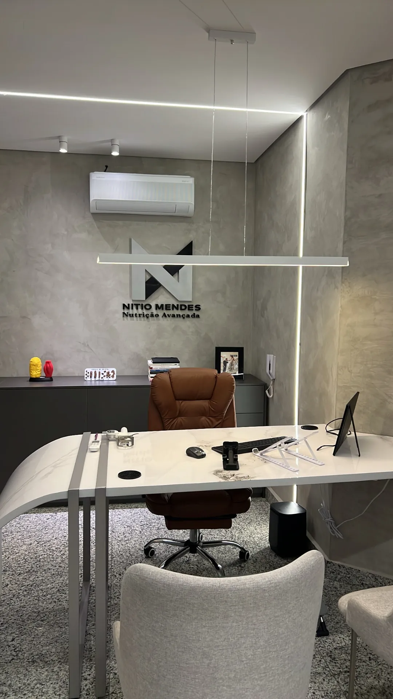

ConsultórioConsultório em Contagem
Ambiente clínico pensado para acolher, com estrutura completa para avaliação clínica e de composição corporal.
Atendimento presencial
Acompanhamento nutricional próximo, personalizado e humanizado, do primeiro dia até o seu resultado. Presencial em Contagem, MG, e online para o Brasil e o exterior.
Planejamento Nutricional Estratégico ↗
O método
A maioria das pessoas já passou por uma consulta nutricional, saiu empolgada e não conseguiu continuar depois, porque se sentiu sozinha no processo. Aqui é diferente: o acompanhamento é próximo, personalizado e humanizado, do primeiro dia até o seu resultado.
Cada plano começa com uma escuta profunda da sua história, rotina, tentativas anteriores e o que travou seus resultados.
Vitaminas, minerais, hormônios, marcadores inflamatórios e outros indicadores que influenciam o resultado, integrados ao plano nutricional.
Construído para a sua vida real, não para uma rotina idealizada. Suplementação e manipulados quando necessário, sempre individualizados.
Acesso direto ao Nítio e à equipe multidisciplinar, e a cada quinze dias uma avaliação de sono, intestino, fome, treinos e rotina.
Especialidades clínicas
12 / Áreas de atuação
Espaço & obras
04 / Frentes

ConsultórioAmbiente clínico pensado para acolher, com estrutura completa para avaliação clínica e de composição corporal.
Atendimento presencial
A balança mede peso, não saúde. A avaliação acompanha massa magra e gordura ao longo de todo o processo.
Estrutura clínica
 Neuroemocional
Neuroemocional
Como as novas descobertas da neurociência podem te ajudar a gerenciar as suas emoções.
Obra publicada
 Ebook
Ebook
Guia clínico e prático para quem já tentou emagrecer e não conseguiu manter o resultado. Sem efeito sanfona.
Material autoral
Em números
Depoimentos
Relatos publicados pelos próprios pacientes no Google, reproduzidos sem edição. Os resultados variam de pessoa para pessoa.
Perguntas frequentes
Trabalho exclusivamente com atendimento particular. Nessa modalidade, você investe diretamente no acompanhamento e, com o recibo que emito, pode solicitar reembolso ao seu plano de saúde. É um direito seu escolher por quem quer ser acompanhado, e aqui o processo é ilimitado e personalizado, sem restrições de número de consultas como acontece em muitos convênios. Para saber o valor do reembolso disponível, entre em contato com a central do seu plano e pergunte sobre cobertura para nutricionista particular.
Os primeiros sinais costumam aparecer nas primeiras semanas, como melhora de disposição, aumento da performance, mais controle alimentar e sensação de organização. Resultados visuais ficam mais evidentes entre 20 e 30 dias. O ponto central aqui não é só o resultado rápido, e sim conseguir sustentar esse resultado sem efeito sanfona. O processo é construído para evoluir de forma contínua, respeitando seu ponto de partida, sua rotina e sua adesão.
A maioria das pessoas que entra no acompanhamento já tentou dieta, treino, aplicativo ou acompanhamento anterior. O que normalmente falhou não foi a pessoa, foi a estratégia aplicada fora do contexto real dela. Aqui o trabalho começa entendendo o que já foi tentado, o que travou seus resultados e o que precisa ser ajustado para que o processo funcione na sua vida, não em uma rotina idealizada.
O acompanhamento não é pensado para uma rotina perfeita, e sim para a sua rotina real. O plano é ajustado à sua agenda, compromissos, vida social e contexto atual. O foco não é perfeição, é constância bem orientada. Por isso o acompanhamento e os ajustes são parte central do processo.
Mudanças de rotina são esperadas, não exceção. Viagens, trabalho, eventos e imprevistos fazem parte da vida. O acompanhamento existe justamente para adaptar a estratégia quando isso acontece, e não para te cobrar perfeição.
O suporte é diário e direto. Você tem acesso a mim e à equipe para dúvidas, ajustes e alinhamentos sem precisar esperar pela próxima consulta. Além disso, os checkpoints quinzenais garantem que o processo nunca fique à deriva.
Sim. O acompanhamento online segue exatamente o mesmo padrão clínico do presencial. Temos pacientes em mais de 11 países e o resultado é equivalente quando existe comprometimento dos dois lados. A única diferença é a avaliação física, que no online é feita por fotos e medidas enviadas pelo paciente.
Não é obrigatório, mas se você já tiver exames recentes, eles ajudam a personalizar ainda mais o processo desde o início. Caso não tenha, orientamos quais solicitar com base no seu perfil clínico.
Sim. Atendimento online para qualquer país. Já acompanhamos pacientes em Canadá, EUA, Alemanha, Austrália, Portugal, Espanha e Inglaterra, entre outros.
Sim. O acompanhamento é clínico e integrado, com equipe multidisciplinar que inclui equipe médica, educador físico e nutricionistas especializados. Condições de saúde específicas são consideradas desde o início do processo e a estratégia é adaptada para cada caso.